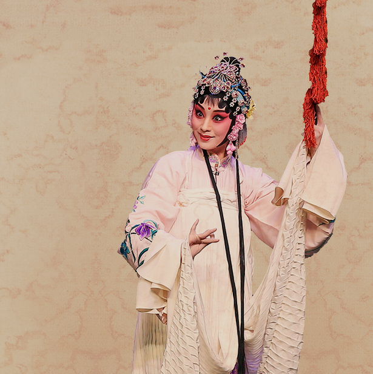
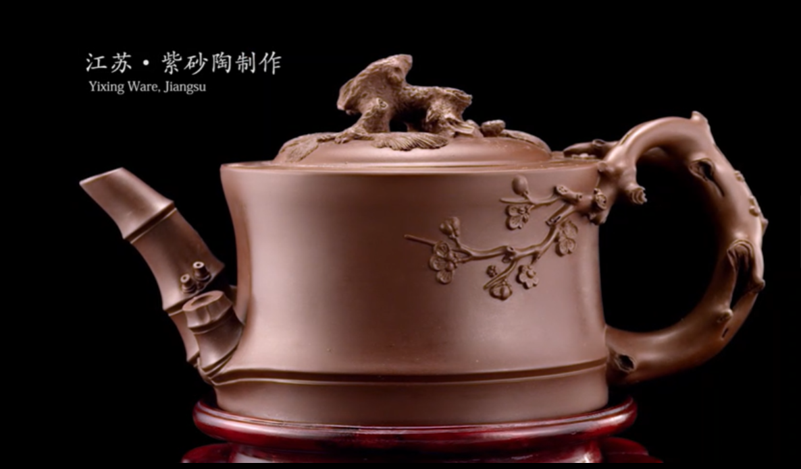
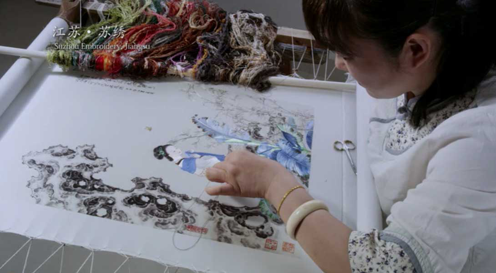
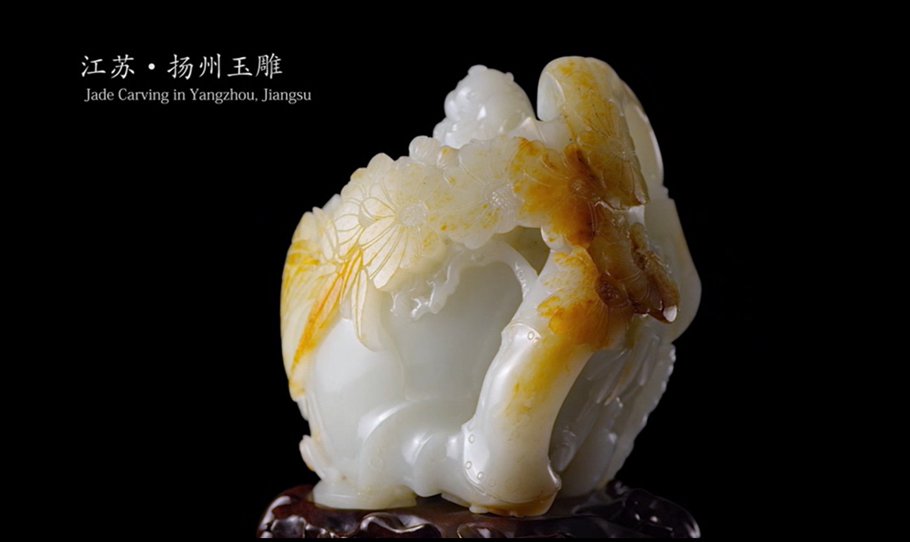
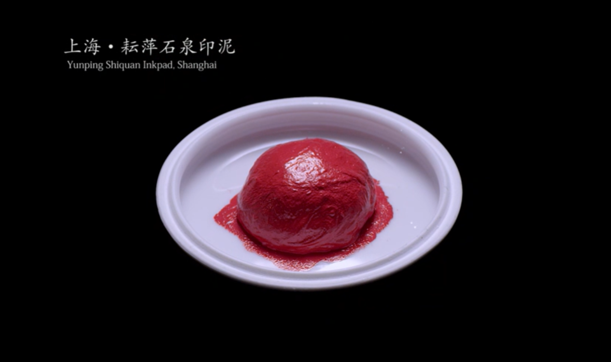
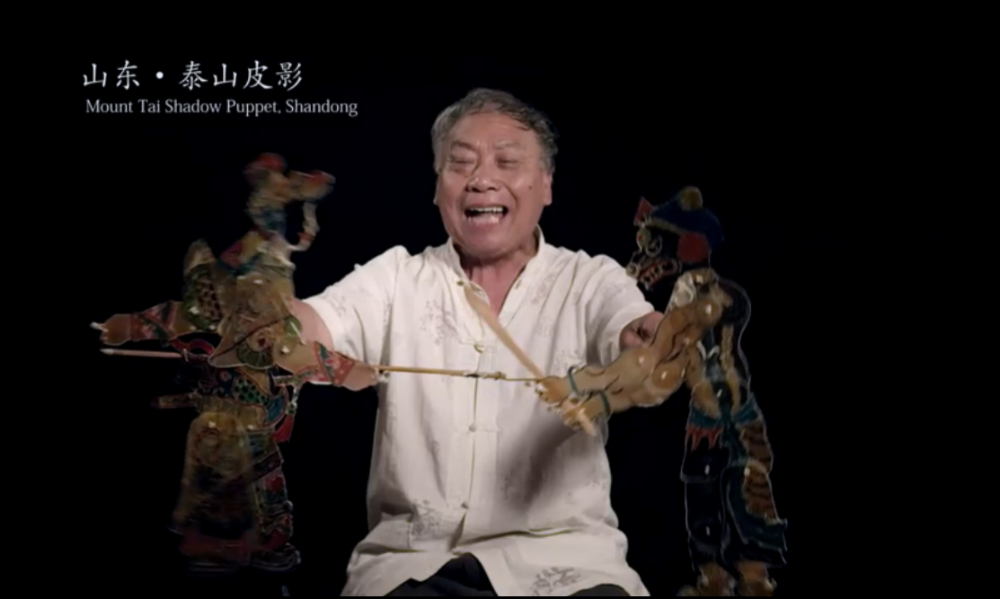
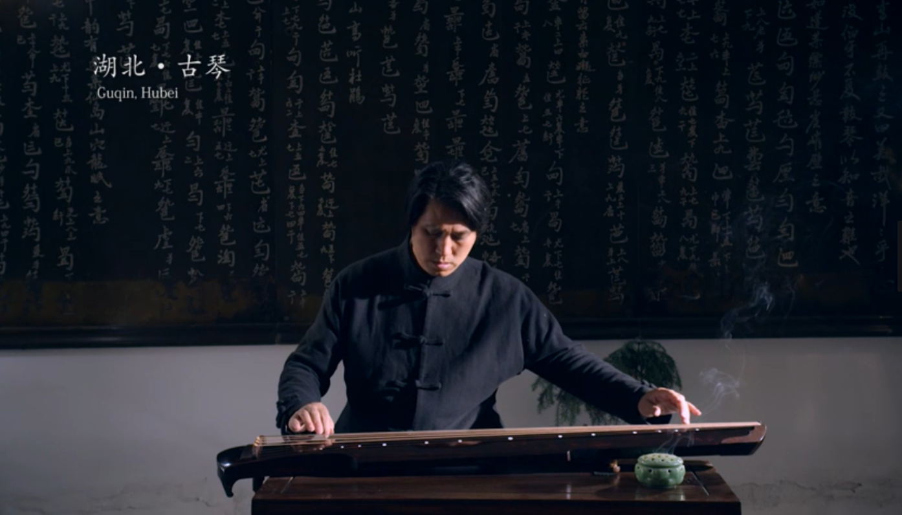
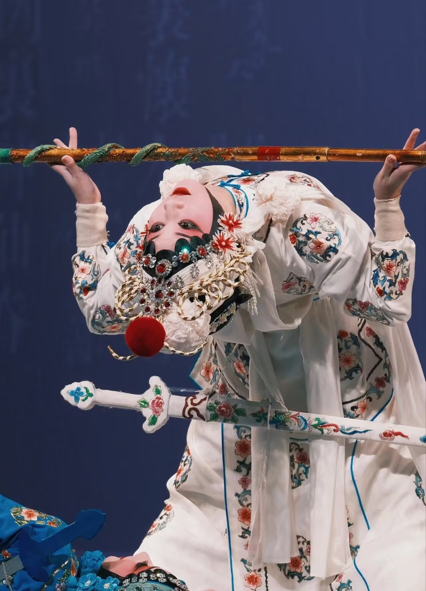
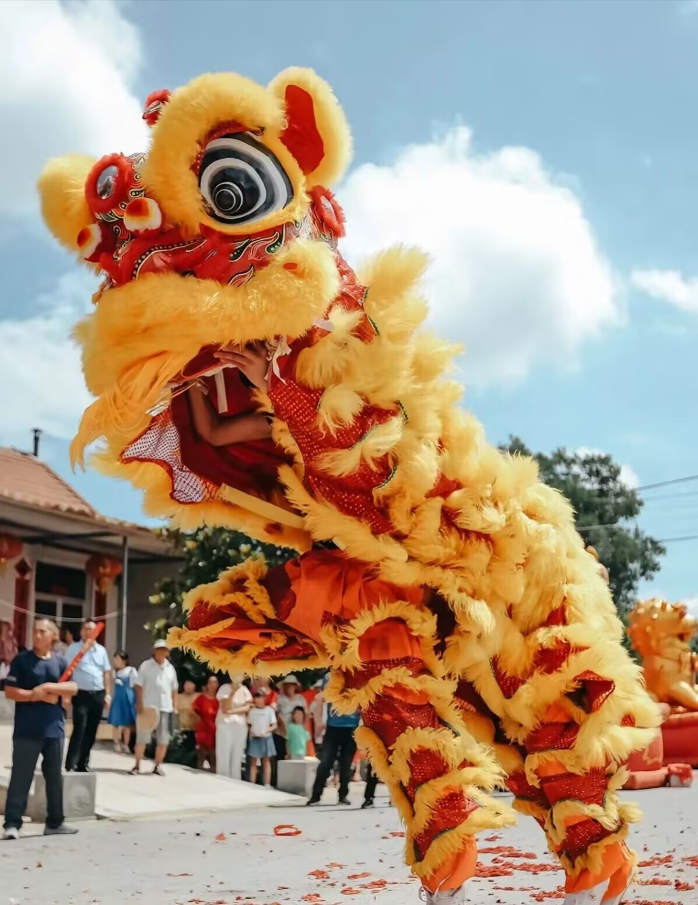
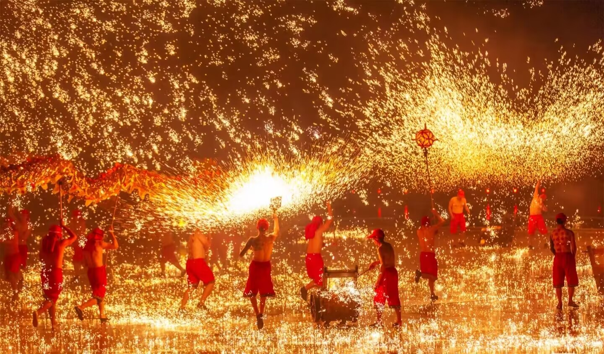

-
CYZ非遗云枢
首页 > 展览
展览

太极拳

宣纸传统制作工艺

2022年文化和自然遗产日

2021年非遗过大年

江苏·紫砂壶

点击观看

江苏·苏绣
点击观看
视频

江苏·扬州玉雕
点击观看

江苏·扬州玉雕

点击观看

江苏·扬州玉雕
点击观看

江苏·扬州玉雕
点击观看
音频
古琴曲目《平沙落雁》
古琴曲目《阳关三叠》
侗族大歌曲目《嘎报郎娘·劝说男女歌》
南音曲目《凤落梧桐》
江南丝竹曲目（琴瑟篇）《春江花月夜》
河南坠子曲目《薛仁贵征东》
辽宁鼓乐传统曲牌合奏《逗汉童》
图集

昆曲
昆曲又称昆腔、昆山腔、昆剧，是元末明初南戏发展到昆山一带，与当地的音乐、歌舞、语言结合而生成的一个新的声腔剧种。
昆曲糅合了唱念做打、舞蹈及武术等，是被誉为“百戏之祖”的南戏系统下之一的曲种。
昆曲在2001年被联合国教科文组织列为“人类口头和非物质遗产代表作”，
2006年列入第一批国家级非物质文化遗产名录。
皮影戏
皮影戏（Shadow Puppets），又称“影子戏”或“灯影戏”，是一种以兽皮或纸板做成的人物剪影以表演故事的民间戏剧。
2011年，中国皮影戏入选人类非物质文化遗产代表作名录。

舞狮
舞狮（Lion Dance），古时称“太平乐”，是中华人民共和国正式开展的体育项目，也是中国优秀的民间艺术。
2024年6月20日，中华人民共和国政府和马来西亚政府关于深化提升全面战略伙伴关系、共建中马命运共同体的联合声明：
两国同意联合申请将“舞狮”项目列入联合国教科文组织人类非物质文化遗产代表作名录。
双方赞许“舞狮”成为两国共享的历史文化，将共同保护该文化遗产

打铁花
打铁花，流传于豫晋地区民间传统的活动，中国民间习俗、民间艺术中富有文化特色的非物质文化遗产。
2008年6月，河南省确山县申报的打铁花经国务院批准列入第二批国家级非物质文化遗产名录。
藏族唐卡
唐卡（Thang-ga）也叫唐嘎，唐喀，系藏文音译，指用彩缎装裱后悬挂供奉的宗教卷轴画。
唐卡是藏族文化中一种独具特色的绘画艺术形式，
题材内容涉及藏族的历史、政治、文化和社会生活等诸多领域。
主管：西华师范大学计算机学院
主办：西华师范大学计算机学院
Copyright©2018 CYZ非遗云枢·CYZ数字博物馆 All Rights Reserved
网站建设：CV工程师
建议使用360极速、Chrome、Firefox浏览器，最佳分辨率1920×1080